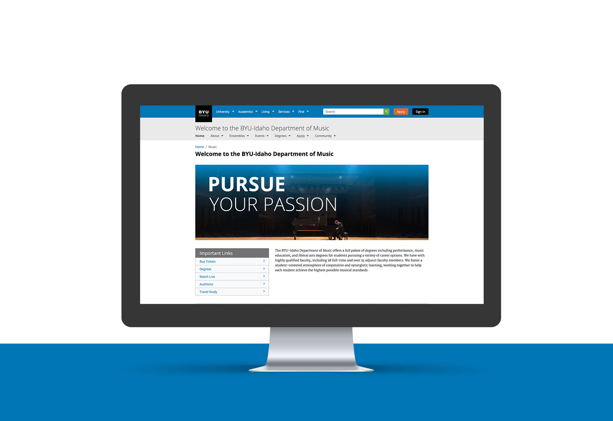

The Mountain Spoke Website was created for a fictional company in Bozeman, Montana. This project consisted of first creating the company identity and target audience. After, the overall design concept and plan was created. A brief version of this design plan can be seen at this link.
User testing als
